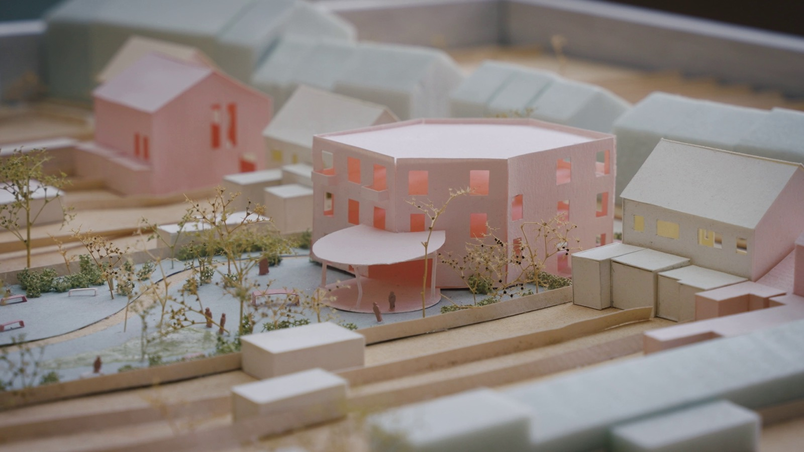

Houses for the Common Good

Overal in Vlaanderen en Brussel staan publieke gebouwen voor een onzekere toekomst. Kerken verliezen hun oorspronkelijke functie, culturele infrastructuur is aan vernieuwing toe en maatschappelijke organisaties vinden steeds moeilijker een betaalbare plek. Tegelijk groeit de behoefte aan ruimtes waar mensen elkaar kunnen ontmoeten, samenwerken en voor elkaar zorgen. Hoe kunnen we bestaande gebouwen en plekken opnieuw inzetten voor het gemeenschappelijk belang? In vijf korte documentaires verkent Houses for the Common Good hoe lokale initiatiefnemers, ontwerpers en gebruikers samen nieuwe antwoorden zoeken.
De vijf films tonen hoe uiteenlopend die antwoorden kunnen zijn. In Boekhoute krijgt een kerk een nieuw leven als kinderopvang en ontmoetingsplek. In Aartselaar groeit een onderzoek naar gemeentelijke gebouwen uit tot een langetermijnvisie voor het hele dorpscentrum. In Brussel biedt Globe Aroma kunstenaars met een vluchtachtergrond een plek om te werken en een gemeenschap op te bouwen, terwijl Molenwest jongeren ruimte geeft om hun talenten te ontwikkelen. In De Boomgaard staat dan weer een nieuwe benadering van wonen en zorg centraal, waarbij mensen zo lang mogelijk in hun vertrouwde buurt kunnen blijven.
Houses for the Common Good kijkt verder dan de architectuur van deze plekken. De documentaires laten zien hoeveel overleg, samenwerking en engagement nodig zijn om ze tot stand te brengen en levendig te houden. Wie beslist over het gebruik van een gebouw? Hoe organiseer je gedeelde ruimtes? En wie zorgt ervoor dat een initiatief ook op lange termijn kan blijven bestaan? De vijf films werden gemaakt voor de tentoonstelling Houses for the Common Good van WORKROOM in Brussel, die loopt van 1 oktober 2026 tot 31 maart 2027. Samen tonen ze hoe maatschappelijke infrastructuur kan meegroeien met de veranderende behoeften van een gemeenschap.
- Aartselaar
- 5'32"
- Boekhoute
- 5'20"
- Molenwest
- 5'34"
- De Boomgaard
- 5'40"
- Globe Aroma
- 6'22"
- Regie
- Bertrand Lafontaine, Michael Lombarts
- Eindredactie
- Bertrand Lafontaine
- Camera en montage
- Michael Lombarts
- Opdrachtgever
- WORKROOM
- Tentoonstelling WORKROOM Brussel · 01.10.2026–31.03.2027